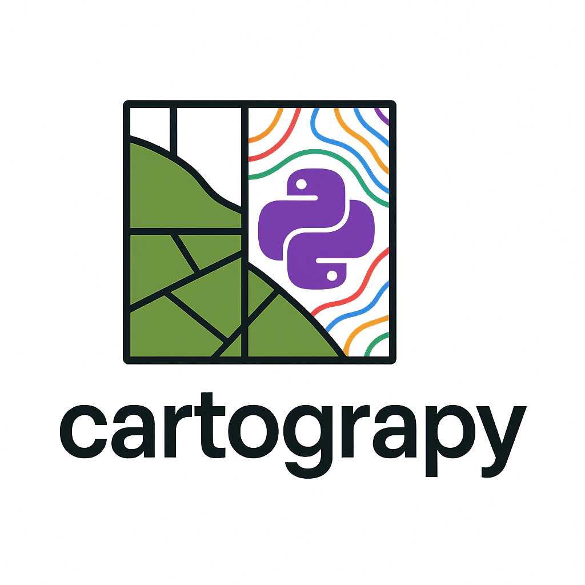
Mapping in Python, the way it was always meant to be.
PRESENTATION
Cartograpy est un package Python conçu pour faciliter la manipulation de données géographiques et la création de cartes de manière simple et intuitive. Grâce à ses nombreuses fonctionnalités, il permet aussi bien aux débutants qu’aux experts de visualiser, analyser et mettre en valeur des données spatiales en quelques lignes de code.

And you have all you need !
FONCTIONNALITES
Voici ce que vous pouvez faire avec cartograpy:
Téléchargement et accès rapide aux données géographiques
- Découpages administratifs : Téléchargez en une ligne les limites administratives de n’importe quel pays, région ou commune.
- Données de continents : Récupérez facilement les frontières vectorielles des continents ou sous-continents.
- Réseaux hydrographiques : Accédez à des couches de rivières, fleuves ou plans d’eau.
- Géocodage des localités : Enrichissez vos jeux de données en rétrouvant des zones géographiques associées à des adresses ou des noms de lieux.
Pre-processing et processing des données
- Importez tout type de données vectorielles ou matricielles : Shapefile, GeoJSON, KML, GPX, GPKG, CSV, Parquet, etc.
- Exportez vos analyses dans le format de votre choix, prêt pour QGIS, ArcGIS ou le web.
- Listing automatique : Repérez en un coup d’œil tous les fichiers géographiques présents dans un dossier.
- Convertissez vos jeux de données entre tous les formats courants en une seule commande.
- Calculs de centroïdes, jointures spatiales et attributaires, fusion de tables, création de nouveaux attributs dynamiquement à partir d’expressions Python.
- Manipulation de DataFrame et GeoDataFrame pour l’analyse de données géographiques.
- Découpage de données vectoriel par emprise ou par masque.
Cartographie et visualisation
- Créez des cartes personnalisées (choroplèthes, points, polygones, tuiles raster, etc.) à l’aide de la classe puissante
Map. - Ajoutez des éléments de style : flèches du nord, barres d’échelle, graticules, labels, titres personnalisés, palettes de couleurs, etc.
- Gérez vos légendes et choisissez parmi plusieurs styles adaptés (scientifique, épuré, académique…).
- Exportez vos cartes directement en PNG, SVG ou autres formats.
- Accédez à des styles de polices et de nombreuses palettes de couleurs, y compris les palettes personnalisées, Seaborn et Matplotlib .
INSTALLATION
Pour installer le package cartograpy, vous pouvez utiliser pip. Ouvrez votre terminal ou invite de commande et exécutez la commande suivante :
pip install cartograpy[!NOTE]
Pour eviter les conflits de dépendences, utilisez un environnement virtuel. Vous pouvez le faire avec pew ou virtual env ou anaconda. J’utilise très souvant
pewpour cela.pip install pew pip new myenv pew workon myenv pip install cartograpy
UTILISATION
cartograpy est composé de 4 modules principaux : - data : pour l’obtention des données - processing : pour le traitement des données - mapper : pour la visualisation des données sur une carte - styling : pour la mise en forme de la carte
<img src="test_files\figure-markdown_strict\mermaid-figure-1.png" style="width:11.36in;height:2.06in" />
Obtension de données géographiques
Pour télécharger simplements des données dans cartograpy, vous devez utiliser le module data. Il existe présentement cinq (5) types de données que vous pouvez telecharger avec cartograpy : - les limites des continents et le découpage administratif des pays (class GeoBoundaries) - des données par le géocodage (class Geocoder) - des données libres d’OSM, écoles, batiments, routes, hopitaux… (class OSM) - des données hydrographiques (class Hydro) - des données de la la WorldBank, differents indicateurs de différentes sources (class WorldBank)
Ces ressources permettent un gain considérable de temps et facilitent la création de vos cartes.
<img src="test_files\figure-markdown_strict\mermaid-figure-4.png" style="width:15in;height:3.06in" />
Toutes les données sont formatées pour être retournées sous forme de GeoDataFrame ou de DataFrame, afin d’en faciliter la manipulation.
Vous devez commencer par importer data de cartograpy de la manière suivante :
from cartograpy import data[!NOTE]
Toutes les données proposées par le module
datasont téléchargées en ligne. Assurez-vous donc d’avoir un accès à Internet lors de l’exécution.
Récupérer les limites de continents ou les limites administratives de pays
Commencez par créer un objet de la classe GeoBoundaries, disponible dans le module data.
bound = data.GeoBoundaries()Telecharger les limites des continents
Vous pouvez commencer par consulter la liste des noms de continents disponibles avec la méthode list_continents_names.
bound.list_continents_names(){'africa': 'Africa',
'afrique': 'Africa',
'asia': 'Asia',
'asie': 'Asia',
'europe': 'Europe',
'north america': 'North America',
'amérique du nord': 'North America',
'south america': 'South America',
'amérique du sud': 'South America',
'oceania': 'Oceania',
'océanie': 'Oceania',
'antarctica': 'Antarctica',
'antarctique': 'Antarctica'}Pour obtenir une geodataframe des continents, vous pouvez utiliser la méthode continents
world = bound.continents() # World ici est une geodataframe des continents
world.head()`
| continent | geometry | |
|---|---|---|
| 0 | Africa | MULTIPOLYGON (((-11.43878 6.78592, -11.70819 6… |
| 1 | Antarctica | MULTIPOLYGON (((-61.13898 -79.98137, -60.61012… |
| 2 | Asia | MULTIPOLYGON (((48.67923 14.0032, 48.23895 13…. |
| 3 | Europe | MULTIPOLYGON (((-53.55484 2.3349, -53.77852 2…. |
| 4 | North America | MULTIPOLYGON (((-155.22217 19.23972, -155.5421… |
# Vous pouvez la visualiser facilement en utilsant 'plot()' de geopandas
world.plot()
Si vous souhaitez obtenir la limite d’un seul continent, il vous suffit de passer son nom en paramètre. Dans l’exemple ci-dessous, on récupère la limite de l’Afrique.
africa=bound.continents("africa")
africa.plot()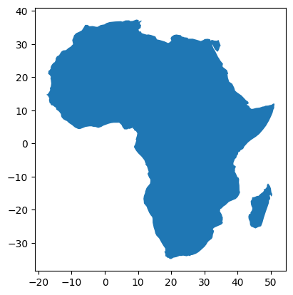
Si vous souhaitez obtenir la limite de plusieurs continents, il vous suffit de passer leur liste en paramètre. Dans l’exemple ci-dessous, on récupère la limite de l’Afrique et de l’Asie.
africa_asia=bound.continents(["africa","asia"])
africa_asia.plot()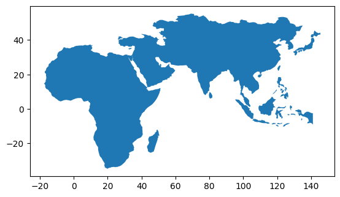
Telecharger les limites administratifs de pays
Pour télécharger les données des limites administratives d’un pays, vous aurez besoin de deux paramètres importants : le nom du pays et le niveau de subdivision administrative souhaité (adminlevel).
Les noms de pays et code iso :
Les codes des pays sont conformes à la norme ISO 3166-1 alpha-3. Pour obtenir la liste des pays valides, vous pouvez utiliser la méthode list_countries() de l’objet GeoBoundaries. L’exemple si dessous renvoi la liste des 10 premiers noms pays.
# Affiche les 10 premiers pays
bound.list_countries()[0:10]['أفغانستان',
'афганистан',
'afghánistán',
'afghanistan',
'αφγανιστάν',
'afganio',
'afganistán',
'afganistan',
'afganisztán',
'աֆղանստան']Vous pouvez également rechercher le code ISO d’un pays en utilisant la méthode get_iso3. Dans l’exemple suivant, on essaye d’obtenir le code ISO de tous les pays contenant le mot-clé « burk ». La méthode renvoie le code ISO3 du Burkina Faso, car c’est le seul pays trouvé.
# Pour obtenir le code iso de tous les pays du monde contenant le mot clé "burk"
bound.get_iso3("burk")'BFA'Si plusieurs pays correspondent, elle retourne une liste de tuples (nom du pays, code ISO3).
bound.get_iso3("con") # Exemple pour obtenir le code ISO d'un pays[('congo', 'cog'),
('república del congo', 'cog'),
('république du congo', 'cog'),
('rep. del congo', 'cog'),
('congo-brazzaville', 'cog'),
('república do congo', 'cog'),
('demokratiske republik congo', 'cod'),
('congo, democratic republic of the', 'cod'),
('república democrática del congo', 'cod'),
('république démocratique du congo', 'cod'),
('rd del congo', 'cod'),
('congo-kinshasa', 'cod'),
('república democrática do congo', 'cod'),
('republica democrată congo', 'cod')]Les niveaux de subdivisions administratives d’un pays :
Il existe cinq (5) niveaux de subdivisions administratives disponibles. Pour les afficher, utilisez la méthode admLevels comme suit :
print(bound.adminLevels())| Niveau GeoBoundaries | Nom commun (FR) | Nom commun (EN) |
|---|---|---|
| ADM0 | Pays | Country |
| ADM1 | Région / État / Province | State / Region |
| ADM2 | Département / District | District / County |
| ADM3 | Sous-préfecture / Commune | Subdistrict / Commune |
| ADM4 | Village / Localité | Village / Locality |
| ADM5 | Quartier / Secteur | Neighborhood / Sector |
[!NOTE]
- Le nombre de niveaux dépend du pays. Certains pays s’arrêtent à ADM2, d’autres vont jusqu’à ADM4 ou ADM5.
- Le nom réel des subdivisions varie d’un pays à l’autre (ex. : « State », « Region », « Province », « Department », etc.).
- GeoBoundaries propose toujours au moins le niveau ADM0 (frontière nationale).
Pour savoir si un niveau administratif est disponible pour un pays, vous pouvez utiliser la méthode is_valid_adm de l’objet GeoBoundaries. Voici un exemple :
# Exemple pour vérifier si le niveau ADM1 est valide pour la Côte d'Ivoire
print(bound.is_valid_adm("CIV","ADM1"))True# Exemple pour vérifier le niveau admin minimum pour la Côte d'Ivoire
print(bound._get_smallest_adm("CIV")) Smallest ADM level found for CIV : ADM3
ADM3Lorsque vous avez le nom d’un ou de plusieurs pays ainsi qu’un niveau de subdivision administrative, vous pouvez alors télécharger les données.
Télécharger les données administratives d’un pays:
# Exemple : Récupérer les données administratives des régions de la cote d'ivoire
civ_data = bound.adm("CIV", "ADM2")
civ_data.head()`
| geometry | shapeName | shapeISO | shapeID | shapeGroup | shapeType | |
|---|---|---|---|---|---|---|
| 0 | POLYGON ((-4.68451 6.27179, -4.6868 6.26883, -… | Agneby-Tiassa | 98640826B52449815511854 | CIV | ADM2 | |
| 1 | POLYGON ((-7.71925 9.07004, -7.72574 9.06397, … | Bafing | 98640826B37750272367318 | CIV | ADM2 | |
| 2 | POLYGON ((-6.19702 10.24246, -6.20038 10.24495… | Bagoue | 98640826B26044148659027 | CIV | ADM2 | |
| 3 | MULTIPOLYGON (((-4.68451 6.27179, -4.68338 6.2… | Belier | 98640826B5123145245776 | CIV | ADM2 | |
| 4 | POLYGON ((-6.70042 9.06196, -6.70118 9.05639, … | Bere | 98640826B43857880322183 | CIV | ADM2 |
civ_data.plot()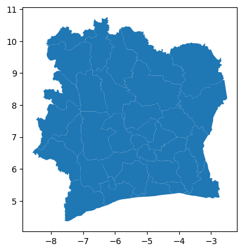
Télécharger les données administratives de plusieurs pays:
Assurez-vous que le niveau administratif (adminLevel) est bien disponible pour tous les pays présents dans la liste à télécharger.
# Exemple : Récupérer les limites administratives de plusieurs pays (senegal et mali ici)
countries_data = bound.adm(["SEN", "mali"], "ADM2")
countries_data["mali"].head()| geometry | shapeName | shapeISO | shapeID | shapeGroup | shapeType | |
|---|---|---|---|---|---|---|
| 0 | POLYGON ((-7.92938 12.68171, -7.93554 12.68821… | Bamako | 8926073B70420899930674 | MLI | ADM2 | |
| 1 | POLYGON ((1.32448 16.90639, 1.03227 16.61402, … | Ansongo | 8926073B56917716124995 | MLI | ADM2 | |
| 2 | POLYGON ((1.17767 17.69958, 1.15458 17.70648, … | Bourem | 8926073B86504284097699 | MLI | ADM2 | |
| 3 | POLYGON ((1.32448 16.90639, 1.65353 17.5735, 1… | Gao | 8926073B84061132695750 | MLI | ADM2 | |
| 4 | POLYGON ((1.31144 15.27381, 1.4716 15.28167, 1… | Menaka | 8926073B3742503303790 | MLI | ADM2 |
Récupérer les métadonnées d’un territoire
Pour aller plus loin que la simple récupération des limites géographiques, vous pouvez également obtenir des informations descriptives sur un territoire grâce à la méthode metadata. Par exemple, le code ci-dessous permet de récupérer les métadonnées associées au niveau national (ADM0) de la Côte d’Ivoire, en utilisant son code ISO (CIV). Vous pouvez ensuite explorer les différentes informations disponibles, comme le nom du territoire, sa superficie, son code ISO, la source des données, etc.
# Récupérer les métadonnées disponibles pour la Côte d'Ivoire
metadata_civ = bound.metadata("CIV", "ADM0")
print(list(metadata_civ.keys()))['boundaryID', 'boundaryName', 'boundaryISO', 'boundaryYearRepresented', 'boundaryType', 'boundaryCanonical', 'boundarySource', 'boundaryLicense', 'licenseDetail', 'licenseSource', 'boundarySourceURL', 'sourceDataUpdateDate', 'buildDate', 'Continent', 'UNSDG-region', 'UNSDG-subregion', 'worldBankIncomeGroup', 'admUnitCount', 'meanVertices', 'minVertices', 'maxVertices', 'meanPerimeterLengthKM', 'minPerimeterLengthKM', 'maxPerimeterLengthKM', 'meanAreaSqKM', 'minAreaSqKM', 'maxAreaSqKM', 'staticDownloadLink', 'gjDownloadURL', 'tjDownloadURL', 'imagePreview', 'simplifiedGeometryGeoJSON']# Le continent
metadata_civ["Continent"]'Africa'# Sous région
metadata_civ["UNSDG-subregion"]'Western Africa'# Région
metadata_civ["UNSDG-region"]'Sub-Saharan Africa'# Url de la prévisualisation de la carte du pays
url_img=metadata_civ["imagePreview"]
url_img'https://github.com/wmgeolab/geoBoundaries/raw/9469f09/releaseData/gbOpen/CIV/ADM0/geoBoundaries-CIV-ADM0-PREVIEW.png'# Afficher l'image de prévisualisation dans le notebook
from IPython.display import Image, display
try :
display(Image(url=url_img))
except :
print("Impossible d'afficher l'image.")
Géocoder une ou plusieurs adresses
Le géocodage permet de convertir des adresses en coordonnées géographiques (latitude et longitude). Vous pouvez géocoder une ou plusieurs adresses en utilisant les méthodes geocode et reverse_geocode de l’objet Geocoder.
Commencez par creer un objet Geocoder :
from cartograpy import data
geocoder= data.Geocoder()Vous pouvez maintenant géocoder une ou plusieurs adresses.
Géocodage
La méthode geocode renvoie un tuple dont la première position est un GeoDataFrame des adresses trouvées, et la deuxième une liste des adresses non trouvées. Si une adresse n’est pas trouvée, elle est simplement ignorée.
Le géocodage peut également être effectué sur plusieurs adresses à la fois, en passant une liste d’adresses en paramètre.
Géocoder une adresse
addresse = "bouaké"
resultat_geocode = geocoder.geocode(addresse)
# Adresse trouvée
resultat_geocode[0]Début du géocodage de 1 localité(s)...
Géocodage terminé.| query | address | latitude | longitude | altitude | raw | geometry | |
|---|---|---|---|---|---|---|---|
| 0 | bouaké | Bouaké, Gbêkê, Vallée du Bandama, Côte d’Ivoire | 7.689021 | -5.028355 | 0.0 | {‘place_id’: 275820936, ‘licence’: ’Data © Ope… | POINT (-5.02836 7.68902) |
# Adresse non trouvée
resultat_geocode[1][]Geocoder une liste d’adresses
liste_adresses = ["Abidjan", "Yamoussoukro", "Bouaké", "Korhogo","Man CI", "","portbouet"]
resultat_geocode=geocoder.geocode(liste_adresses)
# Adresses trouvées
resultat_geocode[0]Début du géocodage de 7 localité(s)...
Géocodage terminé.`
| query | address | latitude | longitude | altitude | raw | geometry | |
|---|---|---|---|---|---|---|---|
| 0 | Abidjan | Abidjan, Côte d’Ivoire | 5.320357 | -4.016107 | 0.0 | {‘place_id’: 275930228, ‘licence’: ’Data © Ope… | POINT (-4.01611 5.32036) |
| 1 | Yamoussoukro | Yamoussoukro, Côte d’Ivoire | 6.820007 | -5.277603 | 0.0 | {‘place_id’: 405334522, ‘licence’: ’Data © Ope… | POINT (-5.2776 6.82001) |
| 2 | Bouaké | Bouaké, Gbêkê, Vallée du Bandama, Côte d’Ivoire | 7.689021 | -5.028355 | 0.0 | {‘place_id’: 275820936, ‘licence’: ’Data © Ope… | POINT (-5.02836 7.68902) |
| 3 | Korhogo | Korhogo, Poro, Savanes, Côte d’Ivoire | 9.458070 | -5.631629 | 0.0 | {‘place_id’: 276083703, ‘licence’: ’Data © Ope… | POINT (-5.63163 9.45807) |
| 4 | Man CI | Man, Tonkpi, Montagnes, Côte d’Ivoire | 7.410258 | -7.550372 | 0.0 | {‘place_id’: 277270784, ‘licence’: ’Data © Ope… | POINT (-7.55037 7.41026) |
# Adresses non trouvée
resultat_geocode[1]['', 'portbouet'][!NOTE]
Notez qu’une adresse peut ne pas être trouvé du fait de la connexion internet dans ce cas relancez la commande
Reverse géocodage
Le reverse géocodage, ou géocodage inversé, consiste à convertir des coordonnées géographiques (latitude et longitude) en une adresse ou un lieu compréhensible par l’humain. Cette opération est particulièrement utile lorsqu’on dispose d’un point sur une carte et qu’on souhaite obtenir l’adresse correspondante, comme le nom de la rue, la ville ou même des points d’intérêt à proximité. Le module Geocoder de cartograpy propose une méthode dédiée pour effectuer facilement ce type de requête à partir d’une ou plusieurs coordonnées. Il s’agit de la méthode reverse_geocode et retourne la même chose que geocode.
resultats_reverse=geocoder.reverse_geocode((48.8566, 2.3522))Début du géocodage inverse (coordonnées -> adresse) de 1 point(s)...
Géocodage inverse (coordonnées -> adresse) terminé.# trouvé
resultats_reverse[0]
# On a ici les résulats de l'hotel de ville de Paris`
| query | address | latitude | longitude | altitude | raw | geometry | |
|---|---|---|---|---|---|---|---|
| 0 | 48.8566, 2.3522 | Hôtel de Ville, Place de l’Hôtel de Ville, Qua… | 48.856426 | 2.352528 | 0.0 | {‘place_id’: 88106896, ‘licence’: ’Data © Open… | POINT (2.35253 48.85643) |
# Pas trouvé
resultats_reverse[1][]Télécharger des données hyrographiques
La classe Hydro de cartograpy.data permet de télécharger facilement les données de réseaux hydrographiques à l’échelle des continents, en s’appuyant sur la base de données internationale HydroRivers. Grâce à cette classe, vous pouvez accéder rapidement aux principaux cours d’eau et réseaux hydrologiques d’un continent donné, ce qui facilite la création de cartes thématiques, l’analyse des bassins versants ou l’étude des ressources en eau à large échelle.
Vous pouvez commencer par créer un objet Hydro.
from cartograpy import data
hydro=data.Hydro()Informations sur les variables disponibles
Pour obtenir des informations sur les différentes variables de la GeoDataFrame d’hydrorivers retournée, vous pouvez utiliser la méthode describe_variables() de Hydro.
print(hydro.describe_variables())📘 Description des variables HydroRIVERS :| Nom | Signification | Unité / Type |
|---|---|---|
HYRIV_ID |
ID du tronçon | entier |
NEXT_DOWN |
ID du tronçon aval | entier |
MAIN_RIV |
ID du fleuve principal | entier |
LENGTH_KM |
Longueur du segment | km (float) |
DIST_DN_KM |
Distance jusqu’à l’embouchure | km (float) |
DIST_UP_KM |
Distance depuis la source | km (float) |
CATCH_SKM |
Surface locale du bassin versant | km² (float) |
UPLAND_SKM |
Surface totale en amont | km² (float) |
ENDORHEIC |
1 = bassin fermé, 0 = ouvert | booléen (int) |
DIS_AV_CMS |
Débit moyen | m³/s (float) |
ORD_STRA |
Ordre de Strahler | entier |
ORD_CLAS |
Classe hiérarchique simplifiée | entier |
ORD_FLOW |
Ordre de flux | entier |
HYBAS_L12 |
Code du bassin de niveau 12 | entier (catégorique) |
Télécharger les données de réseau hydrographique
Pour ce faire, vous devez utiliser la méthode download de Hydro et lui passer le code de la région (continent) en paramètre.
Liste des régions:
hydro.valid_regions['af', 'as', 'au', 'eu', 'na', 'sa']| Code | Région |
|---|---|
| af | Afrique |
| as | Asie |
| au | Australie/Océanie |
| eu | Europe |
| na | Amérique du Nord |
| sa | Amérique du Sud |
Téléchargement des données
rivers_africa = hydro.download(region="af") # Afrique
rivers_africa.head()Les données pour la région AF sont déjà présentes.`
| HYRIV_ID | NEXT_DOWN | MAIN_RIV | LENGTH_KM | DIST_DN_KM | DIST_UP_KM | CATCH_SKM | UPLAND_SKM | ENDORHEIC | DIS_AV_CMS | ORD_STRA | ORD_CLAS | ORD_FLOW | HYBAS_L12 | geometry | |
|---|---|---|---|---|---|---|---|---|---|---|---|---|---|---|---|
| 0 | 10000001 | 0 | 10000001 | 0.89 | 0.0 | 7.2 | 11.27 | 11.1 | 0 | 0.062 | 1 | 1 | 8 | 1120031210 | LINESTRING (9.6625 37.325, 9.65625 37.33125) |
| 1 | 10000002 | 0 | 10000002 | 2.90 | 0.0 | 7.0 | 24.59 | 24.2 | 0 | 0.126 | 1 | 1 | 7 | 1120031210 | LINESTRING (9.8 37.30833, 9.81042 37.31875, 9…. |
| 2 | 10000003 | 10000009 | 10000009 | 4.63 | 5.7 | 9.8 | 57.23 | 57.2 | 0 | 0.316 | 1 | 1 | 7 | 1120031210 | LINESTRING (9.68542 37.27083, 9.68542 37.26458… |
| 3 | 10000004 | 10000009 | 10000009 | 0.69 | 5.7 | 5.4 | 11.11 | 11.1 | 0 | 0.061 | 1 | 2 | 8 | 1120031210 | LINESTRING (9.71458 37.2375, 9.71458 37.24375) |
| 4 | 10000005 | 0 | 10000005 | 8.32 | 0.0 | 13.6 | 35.02 | 34.0 | 0 | 0.177 | 1 | 1 | 7 | 1120031210 | LINESTRING (9.75 37.27708, 9.75625 37.27708, 9… |
rivers_africa.plot()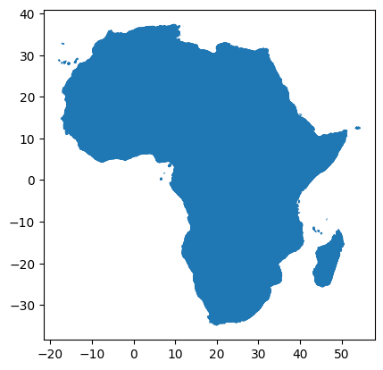
Télécharger données de OpenStreeMap
OpenStreetMap (OSM) est une base de données cartographique mondiale, collaborative et libre, qui recense de nombreux objets géographiques (routes, bâtiments, points d’intérêt, etc.) à l’échelle mondiale.
La classe OSM du module data de cartograpy offre une interface simple et puissante pour télécharger des données issues d’OpenStreetMap (OSM) selon une grande variété de besoins.
Pour commencer, creez un objet OSM.
from cartograpy import data
osm = data.OSM()Télécharger les données OSM
Une fois les tags identifiés, la méthode get_data vous permet de télécharger les objets OSM d’intérêt pour une zone donnée, sous forme de GeoDataFrame.
Il suffit de spécifier les tags OSM correspondant au type d’objet recherché (bâtiments, routes, écoles, hôpitaux, etc.) ainsi que le type de géométrie souhaité (points, polygons, lines ou all).
- Vous pouvez utiliser un nom de lieu :
# Exemple : télécharger toutes les écoles à Abidjan
schools = osm.get_data("Abidjan, Côte d'Ivoire", {"amenity": "school"}, data_type="points")
schools.head()`
| geometry | amenity | name | addr:city | addr:country | addr:state | addr:street | source | toilets:wheelchair | operator | … | addr:postbox | capacity | max_age | min_age | addr:full | fax | addr:pobox | height | start_date | type | ||
|---|---|---|---|---|---|---|---|---|---|---|---|---|---|---|---|---|---|---|---|---|---|---|
| element | id | |||||||||||||||||||||
| node | 452872059 | POINT (-3.96766 5.35476) | school | Le Phénix | NaN | NaN | NaN | NaN | NaN | NaN | NaN | … | NaN | NaN | NaN | NaN | NaN | NaN | NaN | NaN | NaN | NaN |
| 768587329 | POINT (-4.08861 5.31753) | school | Collège Gloris | NaN | NaN | NaN | NaN | NaN | NaN | NaN | … | NaN | NaN | NaN | NaN | NaN | NaN | NaN | NaN | NaN | NaN | |
| 768587517 | POINT (-4.07367 5.33721) | school | Institut Nelson Mandela Yop | Yopougon | CI | Abidjan | Rue O13 | NaN | NaN | NaN | … | NaN | NaN | NaN | NaN | NaN | NaN | NaN | NaN | NaN | NaN | |
| 775786986 | POINT (-3.95377 5.35125) | school | École maternelle | NaN | NaN | NaN | NaN | NaN | NaN | NaN | … | NaN | NaN | NaN | NaN | NaN | NaN | NaN | NaN | NaN | NaN | |
| 844756679 | POINT (-3.99363 5.30375) | school | Collège Voltaire | Marcory | CI | Abidjan | NaN | NaN | NaN | NaN | … | NaN | NaN | NaN | NaN | NaN | NaN | NaN | NaN | NaN | NaN |
5 rows × 64 columns
- Ou une bounding box :
# Télécharger tous les routets dans une zone définie par une bbox
import osmnx as ox
# Coordonnées approximatives du centre de Yamoussoukro
center = (6.8206, -5.2767)
# Distance en mètres au tour du centre de la ville
bbox = ox.utils_geo.bbox_from_point(center, dist=10000)
tags = {"highway": ["motorway", "trunk", "primary", "secondary", "tertiary", "residential", "footway", "cycleway"]} # Pour les routes
highway = osm.get_data(bbox, tags, data_type="lines")
highway.head()`
| geometry | crossing | highway | name | maxspeed | surface | lanes | smoothness | source | noname | … | kerb | tactile_paving | mtb:scale | bridge | layer | shoulder | toll | turn:lanes | description | leisure | ||
|---|---|---|---|---|---|---|---|---|---|---|---|---|---|---|---|---|---|---|---|---|---|---|
| element | id | |||||||||||||||||||||
| way | 22716531 | LINESTRING (-5.27977 6.79398, -5.27939 6.79396… | NaN | secondary | NaN | NaN | asphalt | NaN | NaN | NaN | NaN | … | NaN | NaN | NaN | NaN | NaN | NaN | NaN | NaN | NaN | NaN |
| 22716532 | LINESTRING (-5.24343 6.80558, -5.24436 6.80449… | NaN | tertiary | NaN | NaN | asphalt | 4 | NaN | NaN | NaN | … | NaN | NaN | NaN | NaN | NaN | NaN | NaN | NaN | NaN | NaN | |
| 22716533 | LINESTRING (-5.26734 6.80102, -5.26735 6.80084… | NaN | tertiary | Rue de Sopim | NaN | NaN | NaN | NaN | NaN | NaN | … | NaN | NaN | NaN | NaN | NaN | NaN | NaN | NaN | NaN | NaN | |
| 22716535 | LINESTRING (-5.25813 6.79231, -5.25813 6.79256… | NaN | residential | NaN | NaN | NaN | NaN | bad | NaN | NaN | … | NaN | NaN | NaN | NaN | NaN | NaN | NaN | NaN | NaN | NaN | |
| 22716538 | LINESTRING (-5.26461 6.80095, -5.26457 6.80229… | NaN | residential | NaN | NaN | paved | NaN | NaN | NaN | NaN | … | NaN | NaN | NaN | NaN | NaN | NaN | NaN | NaN | NaN | NaN |
5 rows × 47 columns
highway.plot()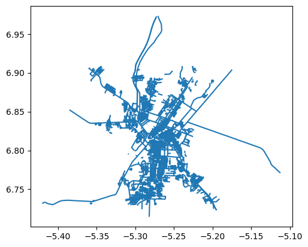
- Ou un GeoDataFrame polygonal :
# batiment de la région du béré
gdf = civ_data[civ_data["shapeName"]=="Belier"] # région du béré
buildings = osm.get_data(gdf, {"building": "yes"}, data_type="polygons")
buildings.head()`
| geometry | addr:city | building | name | amenity | operator | religion | man_made | source | building:levels | denomination | shop | office | bus | public_transport | healthcare | townhall:type | government | content | type | ||
|---|---|---|---|---|---|---|---|---|---|---|---|---|---|---|---|---|---|---|---|---|---|
| element | id | ||||||||||||||||||||
| relation | 11341185 | POLYGON ((-4.76881 7.42618, -4.76902 7.42595, … | NaN | yes | NaN | NaN | NaN | NaN | NaN | NaN | NaN | NaN | NaN | NaN | NaN | NaN | NaN | NaN | NaN | NaN | multipolygon |
| 12160778 | POLYGON ((-5.02304 6.55385, -5.02284 6.55391, … | NaN | yes | NaN | NaN | NaN | NaN | NaN | NaN | NaN | NaN | NaN | NaN | NaN | NaN | NaN | NaN | NaN | NaN | multipolygon | |
| 12481444 | POLYGON ((-5.01941 6.55768, -5.01938 6.55751, … | NaN | yes | NaN | NaN | NaN | NaN | NaN | NaN | NaN | NaN | NaN | NaN | NaN | NaN | NaN | NaN | NaN | NaN | multipolygon | |
| 16542174 | POLYGON ((-5.07582 6.584, -5.07581 6.58376, -5… | NaN | yes | NaN | NaN | NaN | NaN | NaN | NaN | NaN | NaN | NaN | NaN | NaN | NaN | NaN | NaN | NaN | NaN | multipolygon | |
| 16542175 | POLYGON ((-5.02682 6.56471, -5.02691 6.56456, … | NaN | yes | NaN | NaN | NaN | NaN | NaN | NaN | NaN | NaN | NaN | NaN | NaN | NaN | NaN | NaN | NaN | NaN | multipolygon |
buildings.plot(facecolor="red")
Obtenir des données de la Bank Mondiale
Vous pouvez utiliser la class WorldBank de data pour cela.
from cartograpy import data
wb=data.WorldBank()Obtenir les sources de données
wb.get_sources()Obtenir les indicateurs disponibles dans une source de données
# 11 Correcpond a la source Africa Development Indicators
wb.get_indicators(11)Obtenir la liste des pays selon une requette
wb.get_countries(query="cote")id name
---- -------------
CIV Cote d'IvoireTélécharger des données données d’un indicateurs
Nous allons maintenant telecharger les données de l’indicateur AG.AID.NCREL.MT qui indique le montant total, en dollars américains courants, de l’aide publique au développement (APD) nette et de l’aide officielle reçue par un pays au cours d’une année.
Nous utiliserons pour ce faire la méthode get_data
get_data(self, indicators, country='all', **kwrargs)
Cette méthode permet de télécharger des données de la Banque mondiale pour un ou plusieurs indicateurs, et pour un ou plusieurs pays, sur une période définie. Elle s’appuie sur le package wbdata pour accéder directement aux bases de données du World Bank Group.
Paramètres :
indicators: un dictionnaire (ou une liste) des codes d’indicateurs Banque mondiale à récupérer, par exemple :{"AG.AID.CREL.MT": "Aide reçue nette"}ou bien["AG.AID.CREL.MT"].country: code du pays (ISO alpha-3, ex. :"CIV"pour la Côte d’Ivoire) ou"all"pour tous les pays.**kwrargs: autres arguments optionnels à passer à la fonction, par exemple :date: période à récupérer, sous forme de tuple ou de string (("2017","2020"))freq: fréquence des données ("Y"pour annuel)- etc.
Retour :
- Un DataFrame pandas contenant les valeurs des indicateurs demandés pour le(s) pays et la période indiqués.
# Données de 2010 à 2012 pour la Côte d'Ivoire
wb.get_data({"AG.AID.CREL.MT": "Aide nette"},"CIV",date=("2010","2012"))`
| Aide nette | |
|---|---|
| date | |
| 2012 | 20940.000 |
| 2011 | 25012.995 |
| 2010 | 12649.200 |
Processing de données
processing vous permet d’executer des taches courantes effectuées sur des données vectorielles. Ce modules comportes plusieurs fonctions pour le chargement, le traitement et la sauvegarde de données vectorielles.
<img src="test_files\figure-markdown_strict\mermaid-figure-3.png" style="width:12.95in;height:2.81in" />
# Importation
from cartograpy.processing import *Charger des données
load(filepath)
Cette fonction permet de charger un fichier de données vectorielles (shapefile, GeoJSON, GPKG, KML, GPX, CSV, parquet, etc.), quel que soit son format. Elle détecte l’extension du fichier et utilise la méthode adaptée pour lire le fichier sous forme de GeoDataFrame (pour les formats géospatiaux) ou de DataFrame classique (pour CSV/parquet).Paramètre :
filepath(str) : chemin du fichier à charger.
# Chargement de données volumineuses
hexagon_data=load("data\other\hexagon 0.2_Jointure data raster.geojson")
hexagon_data.head()<>:2: SyntaxWarning: invalid escape sequence '\o'
<>:2: SyntaxWarning: invalid escape sequence '\o'
C:\Users\kanic\AppData\Local\Temp\ipykernel_43696\3455646038.py:2: SyntaxWarning: invalid escape sequence '\o'
hexagon_data=load("data\other\hexagon 0.2_Jointure data raster.geojson")
c:\Users\kanic\.virtualenvs\carto\Lib\site-packages\pyogrio\raw.py:198: RuntimeWarning: Several features with id = 1 have been found. Altering it to be unique. This warning will not be emitted anymore for this layer
return ogr_read(`
| id | left | top | right | bottom | row_index | col_index | DN | geometry | |
|---|---|---|---|---|---|---|---|---|---|
| 0 | 1 | -4.297638 | 9.616031 | -4.274544 | 9.596031 | 0 | 0 | 242.0 | POLYGON ((-4.29764 9.60603, -4.29186 9.61603, … |
| 1 | 1 | -4.297638 | 9.616031 | -4.274544 | 9.596031 | 0 | 0 | 241.0 | POLYGON ((-4.29764 9.60603, -4.29186 9.61603, … |
| 2 | 1 | -4.297638 | 9.616031 | -4.274544 | 9.596031 | 0 | 0 | 244.0 | POLYGON ((-4.29764 9.60603, -4.29186 9.61603, … |
| 3 | 1 | -4.297638 | 9.616031 | -4.274544 | 9.596031 | 0 | 0 | 231.0 | POLYGON ((-4.29764 9.60603, -4.29186 9.61603, … |
| 4 | 1 | -4.297638 | 9.616031 | -4.274544 | 9.596031 | 0 | 0 | 225.0 | POLYGON ((-4.29764 9.60603, -4.29186 9.61603, … |
# Chargement de mutipolygone
path="data\other\Département de Bouna.geojson"
donnee_bouna=load(path)
donnee_bouna.head()<>:2: SyntaxWarning: invalid escape sequence '\o'
<>:2: SyntaxWarning: invalid escape sequence '\o'
C:\Users\kanic\AppData\Local\Temp\ipykernel_43696\116216181.py:2: SyntaxWarning: invalid escape sequence '\o'
path="data\other\Département de Bouna.geojson"`
| id | Name | description | timestamp | begin | end | altitudeMode | tessellate | extrude | visibility | drawOrder | icon | snippet | geometry | |
|---|---|---|---|---|---|---|---|---|---|---|---|---|---|---|
| 0 | ID_00022 | Bouna | <html xmlns:fo=“http://www.w3.org/1999/XSL/For… | None | None | None | clampToGround | -1 | 0 | -1 | None | None | MULTIPOLYGON Z (((-4.19952 9.61499 0, -4.209 9… |
Obtenir des informations sur un multipolygone
get_multipolygon_info(multipolygon)
Retourne un dictionnaire d’informations sur un MultiPolygon (ou Polygon) : nombre de polygones, aires, bornes, aire totale, plus grand/petit polygone, etc.Paramètre :
multipolygon(MultiPolygon ou str) : objet à analyser
multipolygon=donnee_bouna["geometry"][0]
infos_multipolygon=get_multipolygon_info(multipolygon)
infos_multipolygon{'type': 'MultiPolygon',
'num_polygons': 1,
'total_area': 1.1852617495377915,
'bounds': (-4.297637881999947,
8.508406537000042,
-2.596283662999952,
9.616030601000034),
'areas': [1.1852617495377915],
'largest_polygon_area': 1.1852617495377915,
'smallest_polygon_area': 1.1852617495377915}Séparer un multipolygon en polygone simple
split_multipolygon(multipolygon, return_type='geodataframe')
Sépare un objet MultiPolygon (ou sa représentation WKT, ou une GeoDataFrame) en polygones individuels, et retourne soit une liste de polygones, soit un GeoDataFrame.Paramètres :
multipolygon(MultiPolygon, str ou GeoDataFrame) : objet à séparerreturn_type(str) : format du résultat (‘list’ ou ‘geodataframe’)
polygones_bouna=split_multipolygon(donnee_bouna)
polygones_bouna.head()`
| id | Name | description | timestamp | begin | end | altitudeMode | tessellate | extrude | visibility | drawOrder | icon | snippet | geometry | original_index | polygon_part | |
|---|---|---|---|---|---|---|---|---|---|---|---|---|---|---|---|---|
| 0 | ID_00022 | Bouna | <html xmlns:fo=“http://www.w3.org/1999/XSL/For… | None | None | None | clampToGround | -1 | 0 | -1 | None | None | POLYGON Z ((-4.19952 9.61499 0, -4.209 9.61568… | 0 | 0 |
polygones_bouna.plot()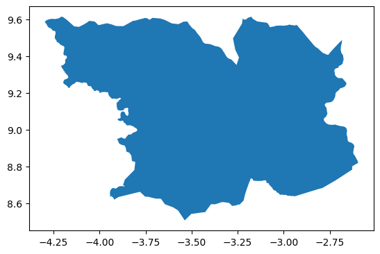
Sauvegarder un GeoDataFrame
save(geodf, file_extension, filename="output", timestamp=False)
Cette fonction sauvegarde un DataFrame ou GeoDataFrame dans différents formats (shp, geojson, gpkg, csv, parquet, xlsx, feather, kml), avec possibilité d’ajouter un timestamp dans le nom du fichier pour éviter l’écrasement.Paramètres :
geodf: le DataFrame ou GeoDataFrame à sauvegarderfile_extension(str) : format de sortiefilename(str, optionnel) : nom de base du fichiertimestamp(bool, optionnel) : ajoute la date/heure au nom
# Sauvegarde en shapefile
save(polygones_bouna,"shp","data/other/polygone de Bouna")Fusionner des geodataframe
fusion(dataframes_list, reset_index=True, ignore_crs=True)
Fusionne (concatène verticalement) une liste de DataFrames ou GeoDataFrames, avec options pour réinitialiser l’index ou ignorer les conflits de système de coordonnées (CRS).Paramètres :
dataframes_list(list) : DataFrames/GeoDataFrames à empilerreset_index(bool, optionnel) : réinitialise l’indexignore_crs(bool, optionnel) : ignore les conflits de CRS
# Exemple 2 : Récupérer les limites administratives de plusieurs pays (senegal et mali ici)
countries_data = bound.adm(["SEN", "mali","civ"], "ADM2")
list_gdf=[gdf for key, gdf in countries_data.items()] # Liste de dataframes
countries_merged_data=fusion(list_gdf) # Fusion des dataframes
countries_merged_data.head()`
| geometry | shapeName | shapeISO | shapeID | shapeGroup | shapeType | |
|---|---|---|---|---|---|---|
| 0 | POLYGON ((-11.88782 13.38481, -11.88765 13.391… | Bakel | 50182788B16013842146029 | SEN | ADM2 | |
| 1 | POLYGON ((-16.38592 15.02258, -16.40452 15.023… | Bambey | 50182788B75300917140294 | SEN | ADM2 | |
| 2 | POLYGON ((-15.9775 12.88596, -15.97446 12.8904… | Bignona | 50182788B19391387689457 | SEN | ADM2 | |
| 3 | POLYGON ((-15.59024 13.8291, -15.58246 13.8437… | Birkelane | 50182788B56779252201559 | SEN | ADM2 | |
| 4 | POLYGON ((-15.9775 12.88596, -15.97 12.89171, … | Bounkiling | 50182788B68388966372963 | SEN | ADM2 |
Creer une nouvelle colonne
add_column(df, column_name, expression, globals_dict=None)
Ajoute une nouvelle colonne à un DataFrame/GeoDataFrame, dont les valeurs sont calculées dynamiquement à partir d’une expression (chaîne de caractères évaluée ligne par ligne).Paramètres :
df: DataFrame/GeoDataFrame d’originecolumn_name(str) : nom de la colonne à créerexpression(str) : expression à évaluerglobals_dict(dict, optionnel) : variables globales accessibles dans l’expression
new_countries_data=add_column(df=countries_merged_data,column_name="random_data",expression="random.randint(1,100)",globals_dict={"random":random})
# global_dics correspond a la liste des packages necessaires pour evaluer l'expression
new_countries_data.head()`
| geometry | shapeName | shapeISO | shapeID | shapeGroup | shapeType | random_data | |
|---|---|---|---|---|---|---|---|
| 0 | POLYGON ((-11.88782 13.38481, -11.88765 13.391… | Bakel | 50182788B16013842146029 | SEN | ADM2 | 8 | |
| 1 | POLYGON ((-16.38592 15.02258, -16.40452 15.023… | Bambey | 50182788B75300917140294 | SEN | ADM2 | 68 | |
| 2 | POLYGON ((-15.9775 12.88596, -15.97446 12.8904… | Bignona | 50182788B19391387689457 | SEN | ADM2 | 97 | |
| 3 | POLYGON ((-15.59024 13.8291, -15.58246 13.8437… | Birkelane | 50182788B56779252201559 | SEN | ADM2 | 53 | |
| 4 | POLYGON ((-15.9775 12.88596, -15.97 12.89171, … | Bounkiling | 50182788B68388966372963 | SEN | ADM2 | 22 |
new_countries_data=add_column(new_countries_data,"dataType","row['shapeGroup']+'-'+row['shapeType']")
# 'row' dans l'expression correspont a une ligne de la dataframe. Elle doit être toujours nommée 'row'
# shapeGroup et shapeType sont des colonnes de la dataframe
new_countries_data.head()`
| geometry | shapeName | shapeISO | shapeID | shapeGroup | shapeType | random_data | dataType | |
|---|---|---|---|---|---|---|---|---|
| 0 | POLYGON ((-11.88782 13.38481, -11.88765 13.391… | Bakel | 50182788B16013842146029 | SEN | ADM2 | 8 | SEN-ADM2 | |
| 1 | POLYGON ((-16.38592 15.02258, -16.40452 15.023… | Bambey | 50182788B75300917140294 | SEN | ADM2 | 68 | SEN-ADM2 | |
| 2 | POLYGON ((-15.9775 12.88596, -15.97446 12.8904… | Bignona | 50182788B19391387689457 | SEN | ADM2 | 97 | SEN-ADM2 | |
| 3 | POLYGON ((-15.59024 13.8291, -15.58246 13.8437… | Birkelane | 50182788B56779252201559 | SEN | ADM2 | 53 | SEN-ADM2 | |
| 4 | POLYGON ((-15.9775 12.88596, -15.97 12.89171, … | Bounkiling | 50182788B68388966372963 | SEN | ADM2 | 22 | SEN-ADM2 |
list(new_countries_data.columns)['geometry',
'shapeName',
'shapeISO',
'shapeID',
'shapeGroup',
'shapeType',
'random_data',
'dataType']Creer un geodataframe de centroïde
centroids(geodf)
Crée un nouveau GeoDataFrame contenant les centroïdes de chaque géométrie de l’objet d’entrée.Paramètre :
geodf(GeoDataFrame) : table géospatiale d’origine
coundtries_centroids = centroids(new_countries_data)
# Maintenant coundtries_centroids est un GeoDataFrame de points (centroïdes)
# avec tous les attributs originaux de new_countries_data
coundtries_centroids.head()`
| geometry | shapeName | shapeISO | shapeID | shapeGroup | shapeType | random_data | dataType | |
|---|---|---|---|---|---|---|---|---|
| 0 | POINT (-12.25523 14.17004) | Bakel | 50182788B16013842146029 | SEN | ADM2 | 8 | SEN-ADM2 | |
| 1 | POINT (-16.48386 14.80261) | Bambey | 50182788B75300917140294 | SEN | ADM2 | 68 | SEN-ADM2 | |
| 2 | POINT (-16.36673 12.88758) | Bignona | 50182788B19391387689457 | SEN | ADM2 | 97 | SEN-ADM2 | |
| 3 | POINT (-15.68446 14.05259) | Birkelane | 50182788B56779252201559 | SEN | ADM2 | 53 | SEN-ADM2 | |
| 4 | POINT (-15.60351 13.13488) | Bounkiling | 50182788B68388966372963 | SEN | ADM2 | 22 | SEN-ADM2 |
# Visualisation rapide
coundtries_centroids.plot(markersize=50, color='red',label="Centroïde")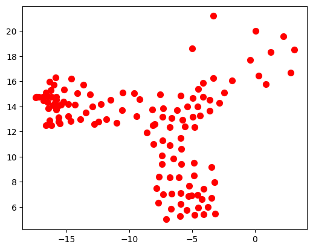
Découper selon un masque de geodataframe
clip_gdf_by_mask(gdf_source, gdf_emprise, buffer_distance=0, crs="EPSG:4326")
Découpe (clip) une GeoDataFrame selon la géométrie d’emprise d’une autre GeoDataFrame, avec possibilité d’appliquer un buffer et de gérer le système de coordonnées.Paramètres :
gdf_source(GeoDataFrame) : table à découpergdf_emprise(GeoDataFrame) : masque de découpebuffer_distance(float, optionnel) : distance de buffercrs(str, optionnel) : CRS à utiliser si absent
rivers_civ=clip_gdf_by_mask(rivers_africa,civ_data)
rivers_civ.head()c:\Users\kanic\OneDrive\cartograpy\cartograpy\processing.py:420: UserWarning: gdf_emprise n'a pas de CRS défini. Attribution du CRS par défaut: EPSG:4326
warnings.warn(f"gdf_emprise n'a pas de CRS défini. Attribution du CRS par défaut: {crs}")
c:\Users\kanic\OneDrive\cartograpy\cartograpy\processing.py:428: DeprecationWarning: The 'unary_union' attribute is deprecated, use the 'union_all()' method instead.
emprise_totale = gdf_emprise.geometry.unary_union`
| HYRIV_ID | NEXT_DOWN | MAIN_RIV | LENGTH_KM | DIST_DN_KM | DIST_UP_KM | CATCH_SKM | UPLAND_SKM | ENDORHEIC | DIS_AV_CMS | ORD_STRA | ORD_CLAS | ORD_FLOW | HYBAS_L12 | geometry | |
|---|---|---|---|---|---|---|---|---|---|---|---|---|---|---|---|
| 601281 | 10601282 | 10600136 | 10877687 | 3.85 | 3711.6 | 8.3 | 21.09 | 21.1 | 0 | 0.103 | 1 | 5 | 7 | 1120784650 | LINESTRING (-6.26875 10.72917, -6.26875 10.73999) |
| 601419 | 10601420 | 10599829 | 10877687 | 5.83 | 3708.9 | 300.2 | 26.15 | 10211.1 | 0 | 100.955 | 4 | 3 | 4 | 1120784660 | LINESTRING (-6.22708 10.72708, -6.22292 10.731… |
| 601851 | 10601852 | 10601420 | 10877687 | 2.67 | 3714.5 | 42.2 | 3.59 | 426.6 | 0 | 2.249 | 3 | 4 | 6 | 1120786120 | LINESTRING (-6.22188 10.72604, -6.22292 10.727… |
| 602019 | 10602020 | 10603004 | 10877687 | 2.44 | 3741.0 | 7.3 | 22.15 | 22.1 | 0 | 0.113 | 1 | 5 | 7 | 1121946950 | LINESTRING (-6.40542 10.71375, -6.40208 10.71042) |
| 602170 | 10602171 | 10603004 | 10877687 | 0.97 | 3741.0 | 5.7 | 11.39 | 11.4 | 0 | 0.060 | 1 | 6 | 8 | 1121946950 | LINESTRING (-6.40833 10.70417, -6.40208 10.71042) |
Visualisation de données
cartograpy permet de creer rapidement des cartes pour visualier les données géographiques grace son module mapper.
Le principe de création de cartes simples et intuitives avec cartograpy repose sur l’utilisation de la classe Map, qui permet de générer des rendus statiques de cartes. Les étapes sont les suivantes :
- Créer un objet
Map - Personnaliser le format de papier avec des dimensions internationales (A4, A3, B2, etc.)
- Ajouter vos couches de données
- Ajuster le style à votre convenance (ajout de flèche du nord, de légende, d’échelle, etc.)
- Afficher la carte
C’est aussi simple que ça !
<img src="test_files\figure-markdown_strict\mermaid-figure-2.png" style="width:14.3in;height:0.98in" />
from cartograpy.mapper import *Nous allons ajouter des données aléatoire a nos données vectorielle pour avec random pour la demonstration
# J'ajoute des données aléatoires a civ_data
import random
civ_data['data'] = [random.randint(0,10000) for i in range(len(civ_data))]civ_data.head()`
| geometry | shapeName | shapeISO | shapeID | shapeGroup | shapeType | data | |
|---|---|---|---|---|---|---|---|
| 0 | POLYGON ((-4.68451 6.27179, -4.6868 6.26883, -… | Agneby-Tiassa | 98640826B52449815511854 | CIV | ADM2 | 6615 | |
| 1 | POLYGON ((-7.71925 9.07004, -7.72574 9.06397, … | Bafing | 98640826B37750272367318 | CIV | ADM2 | 3670 | |
| 2 | POLYGON ((-6.19702 10.24246, -6.20038 10.24495… | Bagoue | 98640826B26044148659027 | CIV | ADM2 | 7452 | |
| 3 | MULTIPOLYGON (((-4.68451 6.27179, -4.68338 6.2… | Belier | 98640826B5123145245776 | CIV | ADM2 | 6443 | |
| 4 | POLYGON ((-6.70042 9.06196, -6.70118 9.05639, … | Bere | 98640826B43857880322183 | CIV | ADM2 | 9182 |
# Ajout de données aléatoire a geocode_localite
geocode_localite=resultat_geocode[0]
geocode_localite["data"]= [random.randint(0,10000) for i in range(len(geocode_localite))]
geocode_localite.head()`
| query | address | latitude | longitude | altitude | raw | geometry | data | |
|---|---|---|---|---|---|---|---|---|
| 0 | Abidjan | Abidjan, Côte d’Ivoire | 5.320357 | -4.016107 | 0.0 | {‘place_id’: 275930228, ‘licence’: ’Data © Ope… | POINT (-4.01611 5.32036) | 9886 |
| 1 | Yamoussoukro | Yamoussoukro, Côte d’Ivoire | 6.820007 | -5.277603 | 0.0 | {‘place_id’: 405334522, ‘licence’: ’Data © Ope… | POINT (-5.2776 6.82001) | 2419 |
| 2 | Bouaké | Bouaké, Gbêkê, Vallée du Bandama, Côte d’Ivoire | 7.689021 | -5.028355 | 0.0 | {‘place_id’: 275820936, ‘licence’: ’Data © Ope… | POINT (-5.02836 7.68902) | 5256 |
| 3 | Korhogo | Korhogo, Poro, Savanes, Côte d’Ivoire | 9.458070 | -5.631629 | 0.0 | {‘place_id’: 276083703, ‘licence’: ’Data © Ope… | POINT (-5.63163 9.45807) | 7648 |
| 4 | Man CI | Man, Tonkpi, Montagnes, Côte d’Ivoire | 7.410258 | -7.550372 | 0.0 | {‘place_id’: 277270784, ‘licence’: ’Data © Ope… | POINT (-7.55037 7.41026) | 1534 |
Visualiser des données rasters
# Création d'une carte raster
carte_dem = Map(figsize=(12, 8), projection=ccrs.PlateCarree())
# Ajout d'une couche raster
carte_dem.add_raster('data\other\Limite DEM Bouna.tif', cmap='tab20c', title='Élévation (m)')
font_name=get_fonts("couri")[0]
carte_dem.set_font(font_name, size=10)
carte_dem.set_title('Topographique de bouna', fontsize=17, color='Black', pad=20)
carte_dem.add_arrow(3, position=(-2.70, 9.55), zoom=0.05, color='black')
carte_dem.add_gridlines()
carte_dem.add_scale_bar(length=20, units="km",pad=0.01)
carte_dem.show()
# Sauvegarde
# carte.save('carte_demo.png')<>:5: SyntaxWarning: invalid escape sequence '\o'
<>:5: SyntaxWarning: invalid escape sequence '\o'
C:\Users\kanic\AppData\Local\Temp\ipykernel_43696\2322661019.py:5: SyntaxWarning: invalid escape sequence '\o'
carte_dem.add_raster('data\other\Limite DEM Bouna.tif', cmap='tab20c', title='Élévation (m)')
WARNING:svglib.svglib:Can't handle color: param(outline)
WARNING:svglib.svglib:Can't handle color: param(outline)
Location est : (0.1, 0.05). La bare d'échelle est placé à 10.0 % de la longeur et à 5.0 % de la hauteur)
Visualiser des données vectorielles
Carte de cloropleth de points et polygones simplement
carte_ci=Map(figsize=(16, 12), projection=ccrs.PlateCarree(),title="Carte cloropleth de données aléatoires")
carte_ci.add_polygons_cloropleth(gdf=civ_data,
column_to_plot='data',
title='Légende',
cmap='tab20c',
)
carte_ci.add_points_cloropleth(
gdf=geocode_localite,
column_to_plot="data",
label_column="query",
point_size_column="data",
show_colorbar=False,
cmap="tab20c"
)
carte_ci.add_gridlines()
font_name=get_fonts("time")[0]
carte_ci.set_font(font_name, size=12)
carte_ci.add_arrow(3, position=(-1.5,10.75),zoom=0.06, color="black")
carte_ci.figsize=(18,16)Warning: No CRS defined for geodf. Setting default CRS to EPSG:4326
WARNING:svglib.svglib:Can't handle color: param(outline)
WARNING:svglib.svglib:Can't handle color: param(outline)
📊 Centrage intelligent appliqué:
Format: Personnalisé (N/A)
Ratio figure: 1.33
Ratio données: 0.95
Étendue: [-10.39, -0.69, 3.91, 11.19]
📊 Centrage intelligent appliqué:
Format: Personnalisé (N/A)
Ratio figure: 1.33
Ratio données: 0.95
Étendue: [-10.39, -0.69, 3.91, 11.19]
Carte cloropleth de points
# Creer un simple cloropleth de point
#============================================
carte2=Map(figsize="A4")
centroide=centroids(geodf=civ_data)
# civ_bound0=client.adm("civ","ADM0")
# carte2.add_polygons(civ_bound0)
carte2.add_points_cloropleth(gdf=centroide,column_to_plot="data",point_size_column="data",alpha=1,show_colorbar=True,show_size_legend=False)
carte2.add_gridlines()
carte2.set_title("Cloropleth de point avec points")
carte2.show()📄 Format de papier: A4 (landscape) - Dimensions: 210 x 297 mm - Figure: 11.7" x 8.3"
Warning: No CRS defined for geodf. Setting default CRS to EPSG:4326
📊 Centrage intelligent appliqué:
Format: A4 (landscape)
Ratio figure: 1.41
Ratio données: 0.91
Étendue: [-9.82, -1.18, 4.50, 10.61]
📊 Centrage intelligent appliqué:
Format: A4 (landscape)
Ratio figure: 1.41
Ratio données: 0.91
Étendue: [-9.82, -1.18, 4.50, 10.61]
Creer une carte de ppersonnalisé de vecteurs (etiquette, orientation du nord, légende et echelle)
Nous allons modifier légèrement les noms shapeName de Yamoussoukro et Abidjan pour faciliter la lecture.
# list(civ_data.shapeName.unique()) # liste des valeurs uniques de la colonne 'shapeName'
civ_data["shapeName"].replace({
"District Autonome D'Abidjan": "Abidjan",
"District Autonome De Yamoussoukro": "Yamoussoukro"
}, inplace=True)C:\Users\kanic\AppData\Local\Temp\ipykernel_43696\3282224376.py:2: FutureWarning: A value is trying to be set on a copy of a DataFrame or Series through chained assignment using an inplace method.
The behavior will change in pandas 3.0. This inplace method will never work because the intermediate object on which we are setting values always behaves as a copy.
For example, when doing 'df[col].method(value, inplace=True)', try using 'df.method({col: value}, inplace=True)' or df[col] = df[col].method(value) instead, to perform the operation inplace on the original object.
civ_data["shapeName"].replace({
# Creer un objet de carte basique avec OpenLayers et Python
# =========================================================
carte1=Map(figsize="A4",title="Carte de la Côte d'Ivoire")
# Ajouter des couches de données
# =========================================================
carte1.add_polygons(gdf=civ_data,label="Limite des régions",facecolor="orange")
carte1.add_points(gdf=geocode_localite,label="Zone d'enquête")
# Ajouter des etiquettes
# =========================================================
carte1.add_labels(
gdf=civ_data,
label_column='shapeName',
# custom_label="{row['data']}\n{row['shapeName']}", #Pour personnaliser l'affichage
fontsize=8,
# color="#e2f201",
outline_width=1,
fontweight="bold"
)
# Mofifier la tailles du papier en A4
# =========================================================
carte1.set_paper("A4")
# Ajouter les grilles de coordonnées
# =========================================================
carte1.add_gridlines(top_right=True,fontsize=12)
# Ajouter la légende
# =========================================================
carte1.legend_presets("simple", title="Légende", title_fontsize=12, fontsize=12,loc="lower right")
# Ajouter une barre d'echelle
# =========================================================
carte1.add_scale_bar(length=100, units="km", linewidth=4, location=(0.02,0.03))
# Ajouter la fleche du nord geographique
# =========================================================
carte1.add_arrow(arrow=3,position=(-0.5,11),zoom=0.05)
# Changer le style de police
# =========================================================
carte1.set_font('Times New Roman')
# Afficher la carte
# =========================================================
carte1.show(smart_centering=True)
# Enregistrer la carte
# =========================================================
# carte1.save("image.png")WARNING:svglib.svglib:Can't handle color: param(outline)
WARNING:svglib.svglib:Can't handle color: param(outline)
📄 Format de papier: A4 (landscape) - Dimensions: 210 x 297 mm - Figure: 11.7" x 8.3"
⚠️ Attention: Aucun CRS défini. Attribution du CRS par défaut: EPSG:4326
📄 Format mis à jour: A4 (landscape) - Dimensions: 210 x 297 mm - Figure: 11.7" x 8.3"
{'fontsize': 12, 'title_fontsize': 12, 'frameon': True, 'fancybox': True, 'shadow': False, 'framealpha': 1.0, 'facecolor': 'white', 'edgecolor': '#888', 'borderpad': 1.0, 'columnspacing': 2.0, 'title': 'Légende', 'loc': 'lower right'}
🛑Element de légende ajouté None
✅ Légende personnalisée créée avec 2 éléments
🎨 Préréglage 'simple' appliqué à la légende
📊 Centrage intelligent appliqué:
Format: A4 (landscape)
Ratio figure: 1.41
Ratio données: 0.95
Étendue: [-10.96, -0.12, 3.72, 11.38]
🛑Element de légende ajouté None
✅ Légende personnalisée créée avec 2 éléments
Location est : (0.02, 0.03). La bare d'échelle est placé à 2.0 % de la longeur et à 3.0 % de la hauteur)
Carte de lignes
path="data\\QGIS-Training-Data\\exercise_data\shapefile\\rivers.shp"
data_riviere=load(path)
carte4=Map(title="Carte de rivière")
carte4.set_paper("A5")
carte4.add_lines(data_riviere,color="blue",alpha=0.7,linewidth=1,linestyle="--")
carte4.add_gridlines()
carte4.add_arrow(5,position=(20.56,-33.32),zoom=0.03)
carte4.add_scale_bar(15,units="km", pad=0.01,color="black",linewidth=3, location=(0.05,0.05))
carte4.add_scale_bar(15,units="km", pad=0.01,color="red",linewidth=3, location=(0.15,0.05),label="")
carte4.add_legend_element("line",color="blue",label="Rivière", linestyle="--", linewidth=1)
carte4.legend_presets("minimal" ,loc="lower right")
carte4.show()<>:1: SyntaxWarning: invalid escape sequence '\s'
<>:1: SyntaxWarning: invalid escape sequence '\s'
C:\Users\kanic\AppData\Local\Temp\ipykernel_43696\2862275657.py:1: SyntaxWarning: invalid escape sequence '\s'
path="data\\QGIS-Training-Data\\exercise_data\shapefile\\rivers.shp"
WARNING:svglib.svglib:Can't handle color: param(outline)
📄 Format mis à jour: A5 (landscape) - Dimensions: 148 x 210 mm - Figure: 8.3" x 5.8"
⚠️ Attention: Le GeoDataFrame contient des géométries nulles qui seront ignorées
➕ Élément 'Rivière' ajouté à la légende
{'fontsize': 9, 'frameon': False, 'fancybox': False, 'shadow': False, 'framealpha': 1.0, 'handlelength': 1.5, 'handletextpad': 0.5, 'loc': 'lower right'}
🛑Element de légende ajouté None
✅ Légende personnalisée créée avec 1 éléments
🎨 Préréglage 'minimal' appliqué à la légende
📊 Centrage intelligent appliqué:
Format: A5 (landscape)
Ratio figure: 1.42
Ratio données: 1.70
Étendue: [19.06, 20.66, -34.39, -33.26]
🛑Element de légende ajouté None
✅ Légende personnalisée créée avec 1 éléments
Location est : (0.05, 0.05). La bare d'échelle est placé à 5.0 % de la longeur et à 5.0 % de la hauteur)
Location est : (0.15, 0.05). La bare d'échelle est placé à 15.0 % de la longeur et à 5.0 % de la hauteur)
Améliorer le style des cartes
Vous pouvez utiliser explorer et manipuler les palettes de couleurs avec styling de cartograpy
# Chargement de la bibliothèque
from cartograpy.styling import *Les palettes de couleurs
Les palettes de couleurs et styles disponibles sont ceux de matplotlib, seaborn, mplcyberpunk et SciencePlots.
Pour voir la liste des palettes valides, utilisez la commande get_valid_palettes().
# Les groupes de palettes diponibles
get_available_palettes().keys()dict_keys(['custom', 'seaborn_qualitative', 'seaborn_sequential', 'seaborn_diverging', 'matplotlib_sequential', 'matplotlib_diverging', 'matplotlib_cyclic', 'matplotlib_qualitative'])# Voir les pallettes disponibles dans un groupe
get_available_palettes()["seaborn_sequential"]['Blues',
'BuGn',
'BuPu',
'GnBu',
'Greens',
'Greys',
'Oranges',
'OrRd',
'PuBu',
'PuBuGn',
'PuRd',
'Purples',
'RdPu',
'Reds',
'YlGn',
'YlGnBu',
'YlOrBr',
'YlOrRd',
'rocket',
'mako',
'flare',
'crest']# Ou pour voir toutes celles de matplotlib
print (plt.colormaps())['magma', 'inferno', 'plasma', 'viridis', 'cividis', 'twilight', 'twilight_shifted', 'turbo', 'berlin', 'managua', 'vanimo', 'Blues', 'BrBG', 'BuGn', 'BuPu', 'CMRmap', 'GnBu', 'Greens', 'Greys', 'OrRd', 'Oranges', 'PRGn', 'PiYG', 'PuBu', 'PuBuGn', 'PuOr', 'PuRd', 'Purples', 'RdBu', 'RdGy', 'RdPu', 'RdYlBu', 'RdYlGn', 'Reds', 'Spectral', 'Wistia', 'YlGn', 'YlGnBu', 'YlOrBr', 'YlOrRd', 'afmhot', 'autumn', 'binary', 'bone', 'brg', 'bwr', 'cool', 'coolwarm', 'copper', 'cubehelix', 'flag', 'gist_earth', 'gist_gray', 'gist_heat', 'gist_ncar', 'gist_rainbow', 'gist_stern', 'gist_yarg', 'gnuplot', 'gnuplot2', 'gray', 'hot', 'hsv', 'jet', 'nipy_spectral', 'ocean', 'pink', 'prism', 'rainbow', 'seismic', 'spring', 'summer', 'terrain', 'winter', 'Accent', 'Dark2', 'Paired', 'Pastel1', 'Pastel2', 'Set1', 'Set2', 'Set3', 'tab10', 'tab20', 'tab20b', 'tab20c', 'grey', 'gist_grey', 'gist_yerg', 'Grays', 'magma_r', 'inferno_r', 'plasma_r', 'viridis_r', 'cividis_r', 'twilight_r', 'twilight_shifted_r', 'turbo_r', 'berlin_r', 'managua_r', 'vanimo_r', 'Blues_r', 'BrBG_r', 'BuGn_r', 'BuPu_r', 'CMRmap_r', 'GnBu_r', 'Greens_r', 'Greys_r', 'OrRd_r', 'Oranges_r', 'PRGn_r', 'PiYG_r', 'PuBu_r', 'PuBuGn_r', 'PuOr_r', 'PuRd_r', 'Purples_r', 'RdBu_r', 'RdGy_r', 'RdPu_r', 'RdYlBu_r', 'RdYlGn_r', 'Reds_r', 'Spectral_r', 'Wistia_r', 'YlGn_r', 'YlGnBu_r', 'YlOrBr_r', 'YlOrRd_r', 'afmhot_r', 'autumn_r', 'binary_r', 'bone_r', 'brg_r', 'bwr_r', 'cool_r', 'coolwarm_r', 'copper_r', 'cubehelix_r', 'flag_r', 'gist_earth_r', 'gist_gray_r', 'gist_heat_r', 'gist_ncar_r', 'gist_rainbow_r', 'gist_stern_r', 'gist_yarg_r', 'gnuplot_r', 'gnuplot2_r', 'gray_r', 'hot_r', 'hsv_r', 'jet_r', 'nipy_spectral_r', 'ocean_r', 'pink_r', 'prism_r', 'rainbow_r', 'seismic_r', 'spring_r', 'summer_r', 'terrain_r', 'winter_r', 'Accent_r', 'Dark2_r', 'Paired_r', 'Pastel1_r', 'Pastel2_r', 'Set1_r', 'Set2_r', 'Set3_r', 'tab10_r', 'tab20_r', 'tab20b_r', 'tab20c_r', 'grey_r', 'gist_grey_r', 'gist_yerg_r', 'Grays_r', 'rocket', 'rocket_r', 'mako', 'mako_r', 'icefire', 'icefire_r', 'vlag', 'vlag_r', 'flare', 'flare_r', 'crest', 'crest_r']Vous pouvez visualiser une palette de couleurs avec show_palette()
# Pour visualiser une palette de couleurs
show_palette("Coconut")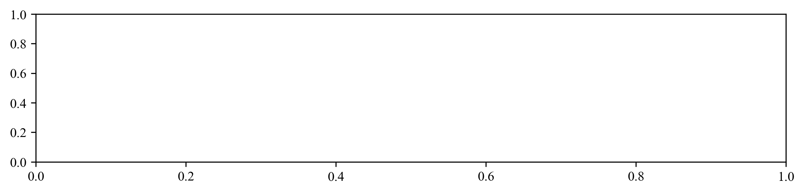
show_palette("rainbow")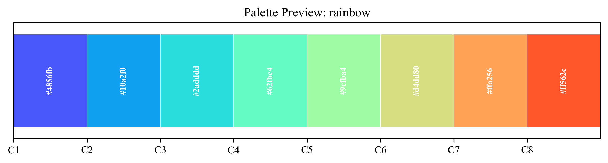
Si vous voulez creer votre propre palette de couleurs, vous pouvez utiliser to_cmap()
colors =["#8B0000", "#A0522D", "#F5F5DC", "#1E3A8A", "#4682B4"]
new_cmap=to_cmap(colors=colors,cmap_type="continuous") # cmap_type est soit 'continuous' soit 'discrete'
show_palette(new_cmap)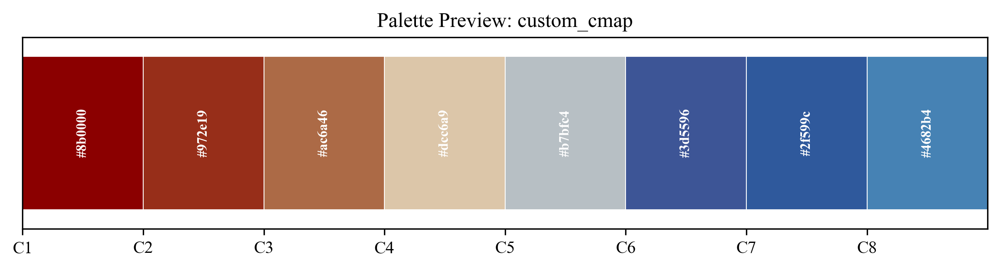
Les polices d’écritures disponibles
get_fonts()[0:10] # Pour voir les 10 prémières polices ['Agency FB',
'Algerian',
'Arial',
'Arial Rounded MT Bold',
'Bahnschrift',
'Baskerville Old Face',
'Bauhaus 93',
'Bell MT',
'Berlin Sans FB',
'Berlin Sans FB Demi']# Pour rechercher des polices
get_fonts("time")[0] # Renvoie la première police de la liste des polices contenant times 'Times New Roman'Les styles prédefinis
Pour voir la liste des styles diponibles, il faut utilser la fonction list_all_styles() de styling.
print(list_all_styles ()){'matplotlib': ['Solarize_Light2', '_classic_test_patch', '_mpl-gallery', '_mpl-gallery-nogrid', 'bmh', 'bright', 'cjk-jp-font', 'cjk-kr-font', 'cjk-sc-font', 'cjk-tc-font', 'classic', 'cyberpunk', 'dark_background', 'fast', 'fivethirtyeight', 'ggplot', 'grayscale', 'grid', 'high-contrast', 'high-vis', 'ieee', 'latex-sans', 'light', 'muted', 'nature', 'no-latex', 'notebook', 'petroff10', 'pgf', 'retro', 'russian-font', 'sans', 'scatter', 'science', 'seaborn-v0_8', 'seaborn-v0_8-bright', 'seaborn-v0_8-colorblind', 'seaborn-v0_8-dark', 'seaborn-v0_8-dark-palette', 'seaborn-v0_8-darkgrid', 'seaborn-v0_8-deep', 'seaborn-v0_8-muted', 'seaborn-v0_8-notebook', 'seaborn-v0_8-paper', 'seaborn-v0_8-pastel', 'seaborn-v0_8-poster', 'seaborn-v0_8-talk', 'seaborn-v0_8-ticks', 'seaborn-v0_8-white', 'seaborn-v0_8-whitegrid', 'std-colors', 'tableau-colorblind10', 'turkish-font', 'vibrant'], 'seaborn': ['darkgrid', 'whitegrid', 'dark', 'white', 'ticks'], 'mplcyberpunk': [], 'SciencePlots': ['science', 'nature', 'ieee', 'vibrant', 'bright', 'muted', 'retro', 'notebook', 'scatter', 'grid', 'seaborn-v0_8']}Pour utiliser un style prédefini, utilisez set_style
set_style("default")❌ Style 'default' non trouvé dans Matplotlib.Commençons par personnaliser nos données afin de créer notre carte.
# Creer un cloropleth de polygone
#=================================================
# Creation de client geoboundaries
bound=data.GeoBoundaries()
# Téléchargement des données de découpage administrativve du mali et du sénégale
dic=bound.adm(["sen","mali"],adm="ADM2")
# Fusion des données du découpages administratif
data_sen_mali=fusion(dataframes_list=[dic["sen"],dic["mali"]])
data_sen_mali.head()`
| geometry | shapeName | shapeISO | shapeID | shapeGroup | shapeType | |
|---|---|---|---|---|---|---|
| 0 | POLYGON ((-11.88782 13.38481, -11.88765 13.391… | Bakel | 50182788B16013842146029 | SEN | ADM2 | |
| 1 | POLYGON ((-16.38592 15.02258, -16.40452 15.023… | Bambey | 50182788B75300917140294 | SEN | ADM2 | |
| 2 | POLYGON ((-15.9775 12.88596, -15.97446 12.8904… | Bignona | 50182788B19391387689457 | SEN | ADM2 | |
| 3 | POLYGON ((-15.59024 13.8291, -15.58246 13.8437… | Birkelane | 50182788B56779252201559 | SEN | ADM2 | |
| 4 | POLYGON ((-15.9775 12.88596, -15.97 12.89171, … | Bounkiling | 50182788B68388966372963 | SEN | ADM2 |
# Création d'une colonne de données aléatoire
data_sen_mali=add_column(df=data_sen_mali,column_name="data",expression="random.randint(50,1000)",globals_dict={"random": random})data_sen_mali.head()`
| geometry | shapeName | shapeISO | shapeID | shapeGroup | shapeType | data | |
|---|---|---|---|---|---|---|---|
| 0 | POLYGON ((-11.88782 13.38481, -11.88765 13.391… | Bakel | 50182788B16013842146029 | SEN | ADM2 | 120 | |
| 1 | POLYGON ((-16.38592 15.02258, -16.40452 15.023… | Bambey | 50182788B75300917140294 | SEN | ADM2 | 805 | |
| 2 | POLYGON ((-15.9775 12.88596, -15.97446 12.8904… | Bignona | 50182788B19391387689457 | SEN | ADM2 | 775 | |
| 3 | POLYGON ((-15.59024 13.8291, -15.58246 13.8437… | Birkelane | 50182788B56779252201559 | SEN | ADM2 | 883 | |
| 4 | POLYGON ((-15.9775 12.88596, -15.97 12.89171, … | Bounkiling | 50182788B68388966372963 | SEN | ADM2 | 110 |
# Création de carte cloropleth
carte3 = Map (figsize="A4",title="Chloropleth de polygone Sénégale et Mali")
carte3.add_polygons_cloropleth(gdf=data_sen_mali,column_to_plot="data",cmap="Coconut")
carte3.add_labels(gdf=data_sen_mali,label_column="data",fontsize=4,outline_width=0)
carte3.add_gridlines()
carte3.add_arrow(1,position=(5,25),zoom=0.03)
carte3.set_font(get_fonts("time")[0])
carte3.show()📄 Format de papier: A4 (landscape) - Dimensions: 210 x 297 mm - Figure: 11.7" x 8.3"
Warning: No CRS defined for geodf. Setting default CRS to EPSG:4326
WARNING:svglib.svglib:Can't handle color: param(outline)
📊 Centrage intelligent appliqué:
Format: A4 (landscape)
Ratio figure: 1.41
Ratio données: 1.47
Étendue: [-19.27, 5.99, 8.64, 26.50]
📊 Centrage intelligent appliqué:
Format: A4 (landscape)
Ratio figure: 1.41
Ratio données: 1.47
Étendue: [-19.27, 5.99, 8.64, 26.50]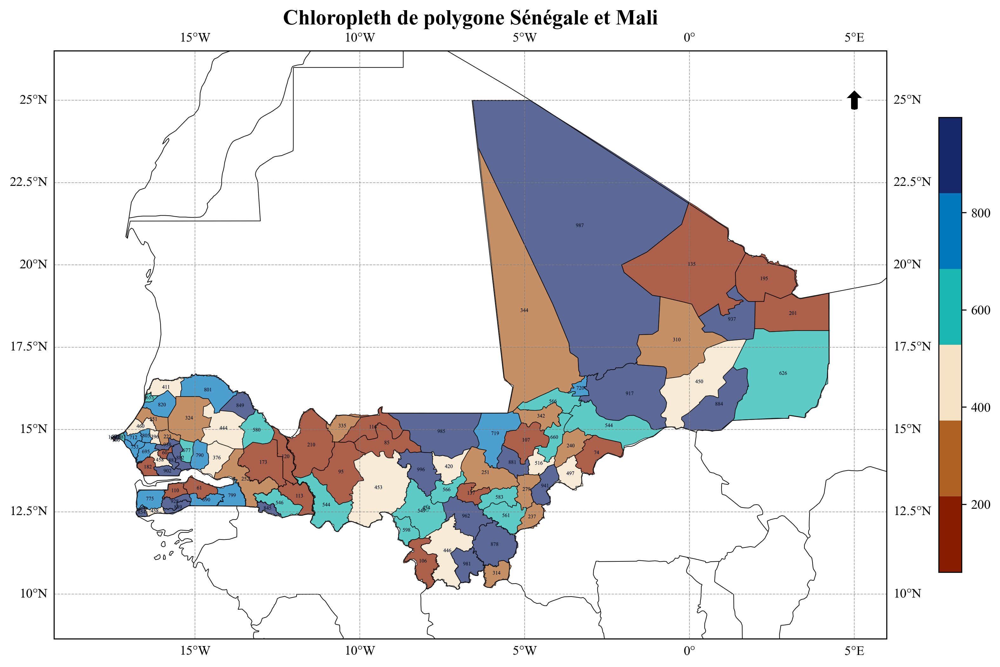
Changeons le style en dark_background
set_style("dark_background")
carte3 = Map (figsize="A4",title="Chloropleth de polygone Sénégale et Mali")
carte3.add_polygons_cloropleth(gdf=data_sen_mali,column_to_plot="data",cmap="Coconut")
carte3.add_labels(gdf=data_sen_mali,label_column="data",fontsize=4,outline_width=0)
carte3.add_gridlines()
carte3.add_arrow(1,position=(5,25),zoom=0.03)
carte3.set_font(get_fonts("time")[0])
carte3.show()✅ Style Matplotlib appliqué : dark_background
📄 Format de papier: A4 (landscape) - Dimensions: 210 x 297 mm - Figure: 11.7" x 8.3"
Warning: No CRS defined for geodf. Setting default CRS to EPSG:4326
WARNING:svglib.svglib:Can't handle color: param(outline)
📊 Centrage intelligent appliqué:
Format: A4 (landscape)
Ratio figure: 1.41
Ratio données: 1.47
Étendue: [-19.27, 5.99, 8.64, 26.50]
📊 Centrage intelligent appliqué:
Format: A4 (landscape)
Ratio figure: 1.41
Ratio données: 1.47
Étendue: [-19.27, 5.99, 8.64, 26.50]
get_fonts("script")['Brush Script MT',
'Edwardian Script ITC',
'Freestyle Script',
'French Script MT',
'Kunstler Script',
'Matura MT Script Capitals',
'Palace Script MT',
'Script MT Bold',
'Segoe Script',
'Vladimir Script']carteRivers=Map("A4",title="Réseau hydrographique de l'Afrique")
carteRivers.set_font("Freestyle Script", size=120)
carteRivers.add_lines(gdf=rivers_africa,linewidth=0.1,color="white",column="ORD_FLOW",cmap="managua")
list(map(lambda spine: spine.set_visible(False), carteRivers.ax.spines.values()))
carteRivers.show()📄 Format de papier: A4 (landscape) - Dimensions: 210 x 297 mm - Figure: 11.7" x 8.3"
📊 Centrage intelligent appliqué:
Format: A4 (landscape)
Ratio figure: 1.41
Ratio données: 1.00
Étendue: [-42.99, 79.41, -42.01, 44.54]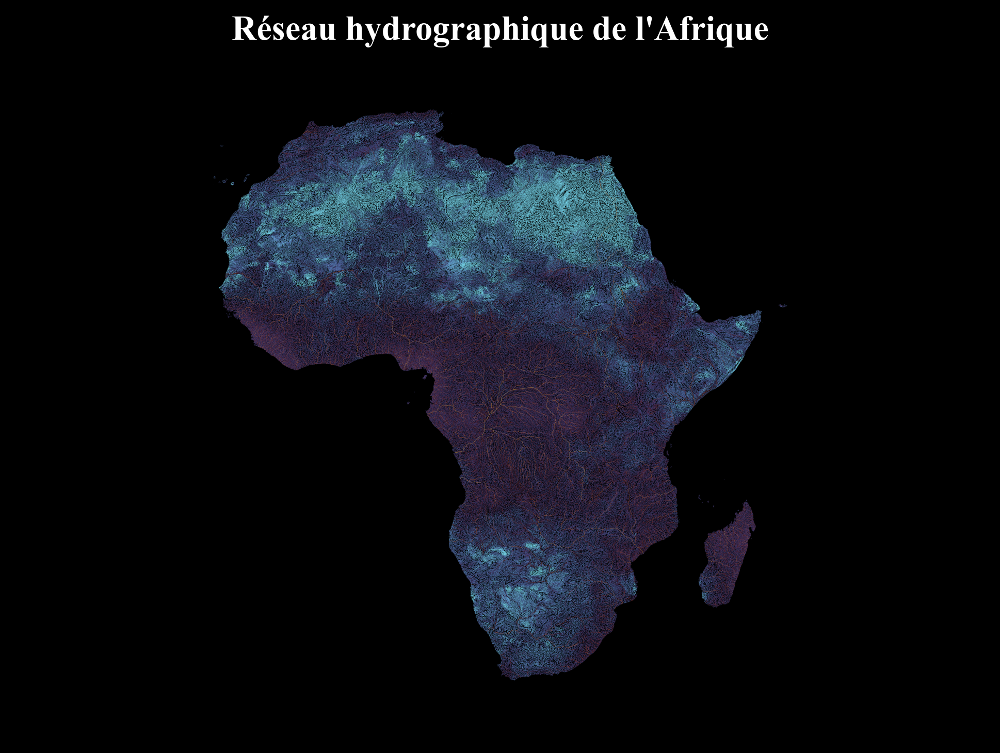
rivers_civ=clip_gdf_by_mask(rivers_africa,civ_data)
rivers_civ.head()c:\Users\kanic\OneDrive\cartograpy\cartograpy\processing.py:420: UserWarning: gdf_emprise n'a pas de CRS défini. Attribution du CRS par défaut: EPSG:4326
warnings.warn(f"gdf_emprise n'a pas de CRS défini. Attribution du CRS par défaut: {crs}")
c:\Users\kanic\OneDrive\cartograpy\cartograpy\processing.py:428: DeprecationWarning: The 'unary_union' attribute is deprecated, use the 'union_all()' method instead.
emprise_totale = gdf_emprise.geometry.unary_union`
| HYRIV_ID | NEXT_DOWN | MAIN_RIV | LENGTH_KM | DIST_DN_KM | DIST_UP_KM | CATCH_SKM | UPLAND_SKM | ENDORHEIC | DIS_AV_CMS | ORD_STRA | ORD_CLAS | ORD_FLOW | HYBAS_L12 | geometry | |
|---|---|---|---|---|---|---|---|---|---|---|---|---|---|---|---|
| 601281 | 10601282 | 10600136 | 10877687 | 3.85 | 3711.6 | 8.3 | 21.09 | 21.1 | 0 | 0.103 | 1 | 5 | 7 | 1120784650 | LINESTRING (-6.26875 10.72917, -6.26875 10.73999) |
| 601419 | 10601420 | 10599829 | 10877687 | 5.83 | 3708.9 | 300.2 | 26.15 | 10211.1 | 0 | 100.955 | 4 | 3 | 4 | 1120784660 | LINESTRING (-6.22708 10.72708, -6.22292 10.731… |
| 601851 | 10601852 | 10601420 | 10877687 | 2.67 | 3714.5 | 42.2 | 3.59 | 426.6 | 0 | 2.249 | 3 | 4 | 6 | 1120786120 | LINESTRING (-6.22188 10.72604, -6.22292 10.727… |
| 602019 | 10602020 | 10603004 | 10877687 | 2.44 | 3741.0 | 7.3 | 22.15 | 22.1 | 0 | 0.113 | 1 | 5 | 7 | 1121946950 | LINESTRING (-6.40542 10.71375, -6.40208 10.71042) |
| 602170 | 10602171 | 10603004 | 10877687 | 0.97 | 3741.0 | 5.7 | 11.39 | 11.4 | 0 | 0.060 | 1 | 6 | 8 | 1121946950 | LINESTRING (-6.40833 10.70417, -6.40208 10.71042) |
set_style("cyberpunk")✅ Style Matplotlib appliqué : cyberpunkcarteRiversCiv=Map("A4",title="Carte hydrographique de la Côte d'Ivoire")
carteRiversCiv.add_lines(gdf=rivers_civ,linewidth=0.5,cmap="Blues",column="ORD_FLOW")
carteRiversCiv.add_gridlines()
carteRiversCiv.set_title("Carte du reseau hydrographique de la Côte d'Ivoire", pad=40,fontsize=20,color="white")
carteRiversCiv.create_legend_from_column(gdf=rivers_civ,column="ORD_FLOW",cmap="Blues",element_type="line")
carteRiversCiv.legend_presets(preset="default",title="Légende",loc="lower right",facecolor="black")
carteRiversCiv.set_font(get_fonts("time")[0])
carteRiversCiv.show()
carteRiversCiv.save(dpi=600,filename="carte reseau hydrographique ci")📄 Format de papier: A4 (landscape) - Dimensions: 210 x 297 mm - Figure: 11.7" x 8.3"
🛑Element de légende ajouté [<matplotlib.lines.Line2D object at 0x000001A216EB1090>, <matplotlib.lines.Line2D object at 0x000001A216EB11D0>, <matplotlib.lines.Line2D object at 0x000001A216EB1310>, <matplotlib.lines.Line2D object at 0x000001A216EB1450>, <matplotlib.lines.Line2D object at 0x000001A216EB1590>]
✅ Légende personnalisée créée avec 5 éléments
📊 Légende créée pour la colonne 'ORD_FLOW' avec 5 éléments
{'fontsize': 10, 'frameon': True, 'fancybox': True, 'shadow': True, 'framealpha': 0.9, 'facecolor': 'black', 'edgecolor': 'black', 'title': 'Légende', 'loc': 'lower right'}
🛑Element de légende ajouté None
✅ Légende personnalisée créée avec 5 éléments
🎨 Préréglage 'default' appliqué à la légende
📊 Centrage intelligent appliqué:
Format: A4 (landscape)
Ratio figure: 1.41
Ratio données: 0.96
Étendue: [-10.94, -0.13, 3.73, 11.38]
🛑Element de légende ajouté None
✅ Légende personnalisée créée avec 5 éléments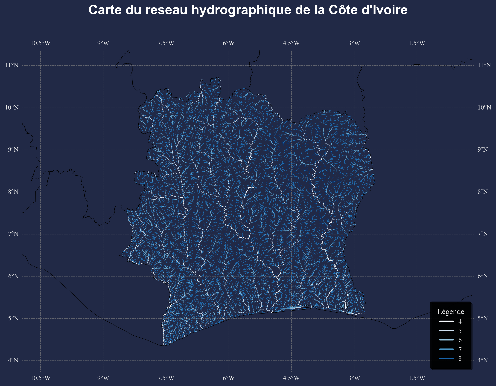
📊 Centrage intelligent appliqué:
Format: A4 (landscape)
Ratio figure: 1.41
Ratio données: 0.96
Étendue: [-10.94, -0.13, 3.73, 11.38]
🛑Element de légende ajouté None
✅ Légende personnalisée créée avec 5 éléments
<Figure size 640x480 with 0 Axes>
Carte sauvegardée: carte reseau hydrographique ci
<Figure size 640x480 with 0 Axes>Ajouter des couches de tous les types
font=get_fonts("da")[0]
font'Candara'print(list_all_styles()){'matplotlib': ['Solarize_Light2', '_classic_test_patch', '_mpl-gallery', '_mpl-gallery-nogrid', 'bmh', 'bright', 'cjk-jp-font', 'cjk-kr-font', 'cjk-sc-font', 'cjk-tc-font', 'classic', 'cyberpunk', 'dark_background', 'fast', 'fivethirtyeight', 'ggplot', 'grayscale', 'grid', 'high-contrast', 'high-vis', 'ieee', 'latex-sans', 'light', 'muted', 'nature', 'no-latex', 'notebook', 'petroff10', 'pgf', 'retro', 'russian-font', 'sans', 'scatter', 'science', 'seaborn-v0_8', 'seaborn-v0_8-bright', 'seaborn-v0_8-colorblind', 'seaborn-v0_8-dark', 'seaborn-v0_8-dark-palette', 'seaborn-v0_8-darkgrid', 'seaborn-v0_8-deep', 'seaborn-v0_8-muted', 'seaborn-v0_8-notebook', 'seaborn-v0_8-paper', 'seaborn-v0_8-pastel', 'seaborn-v0_8-poster', 'seaborn-v0_8-talk', 'seaborn-v0_8-ticks', 'seaborn-v0_8-white', 'seaborn-v0_8-whitegrid', 'std-colors', 'tableau-colorblind10', 'turkish-font', 'vibrant'], 'seaborn': ['darkgrid', 'whitegrid', 'dark', 'white', 'ticks'], 'mplcyberpunk': ['cyberpunk'], 'SciencePlots': ['science', 'nature', 'ieee', 'vibrant', 'bright', 'muted', 'retro', 'notebook', 'scatter', 'grid', 'seaborn-v0_8']}data_sen_mali.head()`
| geometry | shapeName | shapeISO | shapeID | shapeGroup | shapeType | data | |
|---|---|---|---|---|---|---|---|
| 0 | POLYGON ((-11.88782 13.38481, -11.88765 13.391… | Bakel | 50182788B16013842146029 | SEN | ADM2 | 120 | |
| 1 | POLYGON ((-16.38592 15.02258, -16.40452 15.023… | Bambey | 50182788B75300917140294 | SEN | ADM2 | 805 | |
| 2 | POLYGON ((-15.9775 12.88596, -15.97446 12.8904… | Bignona | 50182788B19391387689457 | SEN | ADM2 | 775 | |
| 3 | POLYGON ((-15.59024 13.8291, -15.58246 13.8437… | Birkelane | 50182788B56779252201559 | SEN | ADM2 | 883 | |
| 4 | POLYGON ((-15.9775 12.88596, -15.97 12.89171, … | Bounkiling | 50182788B68388966372963 | SEN | ADM2 | 110 |
cmap=load_cmap("Juarez")
plt.style.use("default")
carte5=Map(figsize="A4",title="")
carte5.add_layer(data_sen_mali,facecolor="red",alpha=0.8,column="shapeGroup",cmap=cmap,linewidth=0.5, label="Découpage administratif")
centroide_sen_mal=centroids(data_sen_mali)
carte5.add_layer(centroide_sen_mal,color="yellow", label="Centroïde",size=70,alpha=0.5)
carte5.legend_presets(loc="lower right")
carte5.set_font(font)
carte5.set_paper(paper_format="A4",orientation="landscape")
carte5.add_arrow(9,(4.4,25),0.4,"gray")
carte5.add_gridlines()
carte5.show()📄 Format de papier: A4 (landscape) - Dimensions: 210 x 297 mm - Figure: 11.7" x 8.3"
⚠️ Attention: Aucun CRS défini. Attribution du CRS par défaut: EPSG:4326
['Polygon' 'MultiPolygon']
⚠️ Attention: Aucun CRS défini. Attribution du CRS par défaut: EPSG:4326
['Point']
{'fontsize': 10, 'frameon': True, 'fancybox': True, 'shadow': True, 'framealpha': 0.9, 'facecolor': 'white', 'edgecolor': 'black', 'loc': 'lower right'}
🛑Element de légende ajouté None
✅ Légende personnalisée créée avec 2 éléments
🎨 Préréglage 'default' appliqué à la légende
📄 Format mis à jour: A4 (landscape) - Dimensions: 210 x 297 mm - Figure: 11.7" x 8.3"
WARNING:svglib.svglib:Unable to find a suitable font for 'font-family:OPEN SANS', weight:normal, style:normal
WARNING:svglib.svglib:Unable to find a suitable font for 'font-family:OPEN SANS', weight:normal, style:normal
WARNING:svglib.svglib:Unable to find a suitable font for 'font-family:Adobe Heiti Std R', weight:normal, style:normal
WARNING:svglib.svglib:Can't handle color: param(outline)
WARNING:svglib.svglib:Can't handle color: param(outline)
WARNING:svglib.svglib:Can't handle color: param(outline)
WARNING:svglib.svglib:Can't handle color: param(outline)
WARNING:svglib.svglib:Can't handle color: param(outline)
WARNING:svglib.svglib:Can't handle color: param(outline)
WARNING:svglib.svglib:Can't handle color: param(outline)
WARNING:svglib.svglib:Can't handle color: param(outline)
WARNING:svglib.svglib:Can't handle color: param(outline)
WARNING:svglib.svglib:Can't handle color: param(outline)
WARNING:svglib.svglib:Can't handle color: param(outline)
WARNING:svglib.svglib:Can't handle color: param(outline)
WARNING:svglib.svglib:Can't handle color: param(outline)
WARNING:svglib.svglib:Can't handle color: param(outline)
WARNING:svglib.svglib:Can't handle color: param(outline)
WARNING:svglib.svglib:Can't handle color: param(outline)
WARNING:svglib.svglib:Can't handle color: param(outline)
WARNING:svglib.svglib:Can't handle color: param(outline)
WARNING:svglib.svglib:Can't handle color: param(outline)
WARNING:svglib.svglib:Can't handle color: param(outline)
WARNING:svglib.svglib:Can't handle color: param(outline)
WARNING:svglib.svglib:Can't handle color: param(outline)
WARNING:svglib.svglib:Can't handle color: param(outline)
WARNING:svglib.svglib:Can't handle color: param(outline)
WARNING:svglib.svglib:Can't handle color: param(outline)
WARNING:svglib.svglib:Can't handle color: param(outline)
WARNING:svglib.svglib:Can't handle color: param(outline)
WARNING:svglib.svglib:Can't handle color: param(outline)
WARNING:svglib.svglib:Can't handle color: param(outline)
WARNING:svglib.svglib:Can't handle color: param(outline)
WARNING:svglib.svglib:Can't handle color: param(outline)
WARNING:svglib.svglib:Can't handle color: param(outline)
WARNING:svglib.svglib:Can't handle color: param(outline)
WARNING:svglib.svglib:Can't handle color: param(outline)
WARNING:svglib.svglib:Can't handle color: param(outline)
WARNING:svglib.svglib:Can't handle color: param(outline)
WARNING:svglib.svglib:Can't handle color: param(outline)
WARNING:svglib.svglib:Can't handle color: param(outline)
WARNING:svglib.svglib:Can't handle color: param(outline)
WARNING:svglib.svglib:Can't handle color: param(outline)
WARNING:svglib.svglib:Can't handle color: param(outline)
WARNING:svglib.svglib:Can't handle color: param(outline)
WARNING:svglib.svglib:Can't handle color: param(outline)
WARNING:svglib.svglib:Can't handle color: param(outline)
WARNING:svglib.svglib:Can't handle color: param(outline)
WARNING:svglib.svglib:Can't handle color: param(outline)
WARNING:svglib.svglib:Can't handle color: param(outline)
WARNING:svglib.svglib:Can't handle color: param(outline)
WARNING:svglib.svglib:Can't handle color: param(outline)
WARNING:svglib.svglib:Can't handle color: param(outline)
WARNING:svglib.svglib:Can't handle color: param(outline)
WARNING:svglib.svglib:Can't handle color: param(outline)
WARNING:svglib.svglib:Can't handle color: param(outline)
WARNING:svglib.svglib:Can't handle color: param(outline)
WARNING:svglib.svglib:Can't handle color: param(outline)
WARNING:svglib.svglib:Can't handle color: param(outline)
WARNING:svglib.svglib:Can't handle color: param(outline)
WARNING:svglib.svglib:Can't handle color: param(outline)
WARNING:svglib.svglib:Can't handle color: param(outline)
WARNING:svglib.svglib:Can't handle color: param(outline)
WARNING:svglib.svglib:Can't handle color: param(outline)
WARNING:svglib.svglib:Can't handle color: param(outline)
WARNING:svglib.svglib:Can't handle color: param(outline)
WARNING:svglib.svglib:Can't handle color: param(outline)
WARNING:svglib.svglib:Can't handle color: param(outline)
WARNING:svglib.svglib:Can't handle color: param(outline)
WARNING:svglib.svglib:Can't handle color: param(outline)
WARNING:svglib.svglib:Can't handle color: param(outline)
📊 Centrage intelligent appliqué:
Format: A4 (landscape)
Ratio figure: 1.41
Ratio données: 1.47
Étendue: [-19.27, 5.99, 8.64, 26.50]
🛑Element de légende ajouté None
✅ Légende personnalisée créée avec 2 éléments